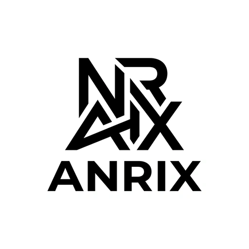

ANRIX NETWORK SUBDOMAIN HUB
Central gateway connecting my flagship portfolio, 14+ archived legacy builds, and active product platforms under the Anrix ecosystem.

GitHubCentral gateway connecting my flagship portfolio, 14+ archived legacy builds, and active product platforms under the Anrix ecosystem.